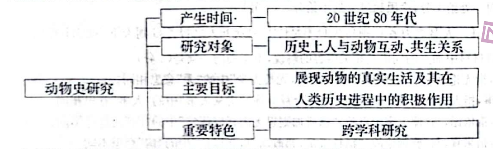

练习 · 论述类文本阅读
动物史研究
动物史研究关注人与动物的历史关系。阅读时应区分学科发展的事实、作者对研究价值的判断，以及支撑各分论点的具体材料。
导读
文体与题材：史学研究述评，节选自肖文超《动物史：一个新的研究领域》。文章介绍动物史研究的兴起、研究路径、学术价值及其面临的问题。
内容脉络：文章首先交代动物史研究的出现、学科起源与近年成果；继而说明其研究对象，依次介绍多元化的史学路径、新兴史学方法与跨学科合作；最后评述其学术价值和方法难题。
阅读重点：辨认事实与因果判断之间的关系。第1题B项把动物史研究“表明”的认识转变改写成学术活动“使得”史家承认动物作用，改变了原文的逻辑。
原文
原文按结构分节；随文内容可定位至对应段落。
动因与成果：史家重新思考动物的历史地位，近年的著述与研讨逐渐增多。
历史学家之所以对动物产生浓厚兴趣，主要源于他们对动物是否具有能动性及其历史地位的再思考。美国加州大学圣克鲁兹分校科学史教授唐娜·哈拉维等人普遍认为，动物的生活、经历和死亡成为解释人类历史、思想和实践的重要视角，因此动物必须被纳入人类历史发展进程予以考察。
2004年，哈里特·瑞特芙在《动物星球》一文中认为动物研究已经从边缘地位进入到欧美史学界的主流。尤其是近10年来，西方动物史研究更是取得了令人瞩目的成绩。欧美学界不仅出版丰富的学术论著、文集和研究指南探讨动物史研究的理论与方法，而且高频次组织以动物史为专题的学术研讨会，对动物在人类历史中的地位加以思考。动物史研究的出现，一定程度上表明历史学家不但愿意承认动物对人类社会发展的积极意义，而且倾向于将它们作为某一特定时间和空间历史中的一部分呈现出来，而不是将它们继续孤立在历史学等人文社会科学的边缘。
对象与路径：研究范围广泛，多个史学领域从不同角度考察动物。
动物史研究的中心是突出人与动物互动、共生关系的书写，其主要目标在于记录和反映动物的真实生活，并展示动物在人类历史进程中的积极作用。动物史研究涉及主题广泛，研究范围从早期的狩猎活动到现时代的宠物饲养、转基因动物等领域。与此同时，西方史学界还出版了涉及狩猎史、动物驯养史、宠物史、动物园史、马戏动物史、兽医史、实验动物史以及动物屠宰史等各种主题的动物史著作。这些著作的大量涌现，充分表明动物史研究在西方史学中焕发出勃勃生机。
动物史研究的路径取向多元化。环境史、社会史、文化史、政治史、经济史、外交史、城市史、医疗史等研究领域都开始注重吸收动物元素，力图进一步丰富各史学领域的研究内容。例如，环境史力图表明动物与植物、景观一样，在整个人类历史中都是推动变革的媒介；文化史把动物描绘成人类文化发展的重要角色；经济史则展示了人类是如何为了食物、劳动、服装、娱乐而控制、商品化和塑造动物的；医疗史则通过研究动物试验，以达到知识探索的目的以及理解动物是如何被人类社会建构的。
方法与合作：全球史视角及跨学科研究扩展了动物史的解释方法。
此外，动物史研究还借鉴了诸如全球史、情感史等新兴史学领域的理论与方法。以全球史为例，将动物纳入全球史研究，历史学家可以从一个全新角度认识动物在人类文明互动中扮演的角色。美国历史学者阿尔弗雷德·克罗斯比在《哥伦布大交换》一书中也认为动物在跨越和环绕大西洋的人员、知识、资本、货物和思想的流通中扮演着中心角色。如果没有从欧洲带来的动物，定居者的拓殖活动是不可能实现的，其中一些动物的繁殖和传播远远超出人类的控制，有时甚至对殖民者本身构成威胁。克罗斯比不仅赋予了动物以重要性，而且还赋予了动物某种程度的能动性。当然，通过全球史视角，历史学家也可以关注非欧洲地区，并从世界不同地区的动物交流实践中获得新的启发，有助于突破欧洲中心论的书写范式。
此外，跨学科研究是动物史书写的重要特色。可以说，自从动物史作为西方史学的一个分支出现后，就开始走上了跨文化、跨学科的研究之路。苏珊·南希认为从事动物史研究，必须提升跨学科研究的能力，吸收和借鉴其他诸如考古学、人类学、社会学、哲学等人文社会学科的方法，并与行为学、生态学、动物福利学、兽医学等自然科学进行密切合作。
价值与难题：动物史更新历史认识，同时面临史料、主体性和伦理问题。
总之，作为一个新兴的史学领域，动物史研究已经呈现出一定的学术价值。一方面，由于动物史以人与动物互动共生关系为研究焦点，以关注人类与动物共同历史命运为其价值取向，展现出独特的学术魅力，丰富了人类对自身历史进程的新理解。另一方面，动物史诉诸超越人类中心主义思想，突出动物对人类社会发展的作用，进而开辟了“后人类史学”研究的新路径。动物史研究的兴起再次表明，我们生活的世界的历史是所有生物的历史，而不仅仅是人类的历史。
值得注意的是，尽管目前西方动物史研究处于蓬勃发展阶段，但是在如何获取可信、有限的史料，在无法直接体验动物视角和感受的情况下如何准确理解动物主体性，如何看待人与动物之间的伦理和道德问题，以及如何利用跨学科知识和方法进行整合研究等都对历史学家们构成了挑战，考验着历史学家的智慧和学识。
（摘编自肖文超《动物史：一个新的研究领域》）
第1题 · 内容理解
下列对原文相关内容的理解和分析，不正确的一项是（3分）
A．瑞特芙的《动物庄园》一书被视为动物史学起源的奠基之作，2004年瑞特芙在《动物星球》一文中认为动物研究已进入欧美史学界的主流。
B．近10年来，西方动物史研究成绩斐然，欧美学界不仅著作丰富，而且研讨频繁，这使得历史学家愿意承认动物对人类社会发展的积极意义。
C．历史学的诸多研究领域，如社会史、政治史、城市史等，都开始注重吸收动物元素来丰富自己的研究内容，动物史研究的路径取向多元化。
D．世界的历史是所有生物的历史，动物对人类社会发展有重要的作用，动物史研究开辟了“后人类史学”研究的新路径，具有一定的学术价值。
参考答案1展开 / 收起
参考作答
B。
文本分析
A项查看证据 ↗
瑞特芙的著作被视为学科奠基之作，2004年她又判断动物研究进入欧美史学主流；选项与原文对应。
B项查看证据 ↗
原文由动物史研究的出现推知史家愿意承认动物的积极意义。选项将这一表征关系改写为著述和研讨使史家改变认识，增加了原文没有建立的因果关系。
C项查看证据 ↗
原文明确说多个史学领域吸收动物元素，进而说明研究路径多元；选项所列领域均在原文之中。
D项查看证据 ↗
结尾将动物史的学术价值联系于超越人类中心主义和“后人类史学”，并指出世界历史包含所有生物的历史；选项与之相符。
知识点
辨析因果关系时，应把“表明”一类认识判断与“导致”一类因果判断分开，参看因果倒置。
第2题 · 推断判断
根据原文内容，下列说法不正确的一项是（3分）
A．有学者认为必须将动物纳入人类历史发展进程进行考察，因为动物的生活、经历和死亡是解释人类历史、思想和实践的重要视角。
B．随着动物史研究的主题和范围越来越广泛，西方史学界涌现出了大量涉及各种主题的动物史著作，可见西方动物史研究形势大好。
C．环境史、文化史、经济史、医疗史等历史学研究领域对于动物的研究，切入角度不同，展现出动物对人类的作用是多方面的。
D．目前西方动物史研究处于蓬勃发展阶段，尽管还有很多问题没有解决，但凭借历史学家的智慧和学识，解决这些难题不在话下。
参考答案2展开 / 收起
参考作答
D。
文本分析
A项查看证据 ↗
原文先说明动物的经历可成为解释人类历史的视角，继而得出应将动物纳入历史考察的判断；选项保持了这一论证关系。
B项查看证据 ↗
原文由主题与研究范围扩大，转写多类著作涌现，再据此判断这一领域生机勃勃；选项概括成立。
C项查看证据 ↗
环境史、文化史、经济史和医疗史分别考察动物的历史作用，选项对不同切入角度的归纳有文本依据。
D项查看证据 ↗
原文将史料获取、动物主体性、伦理关系与跨学科整合列为挑战，并说这些问题考验史家的智慧和学识。选项据此推断解决难题轻而易举，与原文判断相反。
知识点
推断作者态度须保留原文的判断强度和未解决问题，参看推断边界。
第3题 · 论据适切
下列选项，不适合作为论据来支撑原文倒数第三段观点的一项是（3分）
A．原始部落的人靠自己的双手双脚计数，因此没有20以上数字的概念，但他们却清楚记得自家羊群的数量，因为他们用脑海里的图像计数。
B．安德鲁·伊森伯格在《美洲野牛的灭绝》一书中讨论了美国大平原上美洲野牛几近灭绝的问题，将动物研究与美国西部移民历史联系起来。
C．人类将猫带到世界各地并让其自由生活在野外环境中，澳大利亚每年有超过3亿只动物死于猫口，从生态学角度说这影响了生物多样性。
D．发掘商代殷墟墓葬时发现一只狗，骨骼检测的结果表明，狗的食物结构的变化与新石器时代至青铜时代古人食物结构的变化轨迹完全同步。
参考答案3展开 / 收起
参考作答
A。
文本分析
A项查看证据 ↗
倒数第三段论述动物史研究的跨学科特色。此例的研究对象是人类计数方式，羊群仅是帮助说明计数能力的事物，并未借助学科方法研究动物与人类历史的关系。
B项查看证据 ↗
野牛灭绝与美国西部移民史结合，能够说明动物研究与历史学其他领域交叉，符合段落论点。
C项查看证据 ↗
猫在野外环境中的捕食及其对生物多样性的影响，涉及生态学方法，可作为动物史跨学科研究的素材。
D项查看证据 ↗
以动物骨骼证据比较古代动物与人类的饮食变化，结合了考古与生物学资料，符合跨学科研究的方向。
知识点
判断论据是否适切，应先界定段落论点，再核查事例的研究对象和说明方向，参看论据。
第4题 · 图表解读
根据材料内容，下列选项对下面这幅图表的解读不恰当的一项是（3分）
图示：动物史研究的产生时间为20世纪80年代；研究对象为历史上人与动物的互动、共生关系；主要目标为展现动物的真实生活及其在人类历史进程中的积极作用；重要特色为跨学科研究。

A．动物史研究是一个新兴的史学研究领域，至今也才四十年左右。
B．动物史研究不是单独研究动物，而是将动物置于人类史中来研究。
C．动物史研究致力于展示动物对人类社会历史发展的作用及威胁。
D．提升跨学科研究能力，借鉴其他学科的方法，有助于动物史研究。
参考答案4展开 / 收起
参考作答
C。
文本分析
A项查看证据 ↗
原文说该领域自20世纪80年代出现；据2024年考试时间计算约四十年，选项符合图示与原文。
B项查看证据 ↗
图示研究对象是历史上人与动物的互动、共生关系，选项抓住动物与人类历史的关联。
C项查看证据 ↗
图示将主要目标概括为展示动物在人类历史中的积极作用。选项加入“威胁”并将其列为研究目标；文中全球史举例虽提及某些动物可能威胁殖民者，但不能据个别事例改写学科目标。
D项查看证据 ↗
图示列出跨学科研究这一特色，原文进一步说明借鉴多门学科方法；选项推论有据。
知识点
解读图表应逐项核对概念层级与限定语，不能将个别事例升格为学科的主要目标，参看图表信息。
第5题 · 行文思路
请简要分析本文的行文思路。（6分）
参考答案5展开 / 收起
参考作答
①文章先介绍动物史研究的兴起与学科起源，进而说明史家关注动物的动因及近年的著述、研讨成果。
②文章继而界定动物史的研究对象和主要目标，依次说明其研究领域的多元化、新兴史学方法的借鉴及跨学科合作。
③文章最后评述动物史研究的学术价值，并指出史料、动物主体性、伦理关系和方法整合方面的挑战。
文本分析
提出对象并回溯发展查看证据 ↗
开篇界定动物史研究，随后追溯学科起源与研究动因，再以近年的论著和研讨说明发展成果。
分述现状与方法查看证据 ↗
中段从研究对象及主题范围入手，分别说明多元化的史学路径、全球史等新兴方法与跨学科合作，形成并列展开。
评价意义并提出难题查看证据 ↗
结尾先概括学术价值，再列举研究仍面临的史料、主体性、伦理和方法整合等难题。
知识点
分析行文思路，应按论述功能划分层次，交代各层的论述对象及推进次序，参看论证过程。